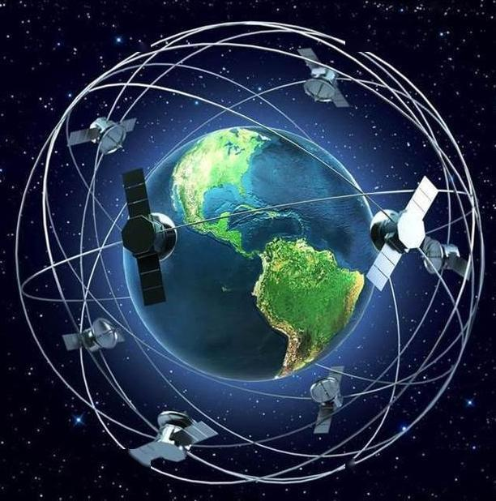
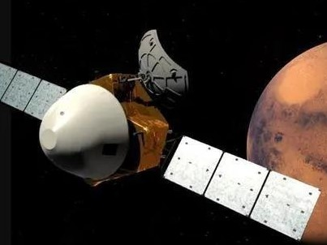

今年5月5日18时00分，我国新研制的长征五号B运载火箭从文昌航天发射场启程， 首次出征太空，长征五号大火箭家族又一名新成员登台亮相。长征五号B运载火箭是 我国首个一级半构型的火箭，系统简单、安全可靠等优点突出，其近地运载能力大于 22吨，是一枚专门为载人航天空间站建设而研制的火箭。它的首飞成功标志着中国载人 航天大剧“第三季”的连台好戏的登场，中华民族的飞天梦从此更进一步。
长征三号在西昌发射，搭载中国北斗三号最后一颗卫星。 至此，长达26年的北斗工程正式收官。北斗卫星导航系统是 中国着眼于国家安全和经济社会发展需要，能够自主建设运行 的全球卫星导航系统，能够为全球用户提供全天候、全天时、 高精度的定位、导航和授时服务的重要基础设施。
2020年7月23日12时41分，中国首次火星探测任务“天问一号” 探测器由长征五号B运载火箭发射升空，其任务目标是通过一次发射， 实现火星环绕、着陆和巡视探测。从国家航天局获悉：截至2020年 11月17日凌晨，我国首次火星探测任务天问一号探测器已在轨飞行 116天，飞行里程超过3亿千米,距离地球约6380万千米。探测器 姿态稳定，能源平衡，部分分系统完成自检，各系统工作正常， 预计明年5月在火星着陆。天问一号将有可能揭开火星是否存在 水和生命的秘密，同时也是我国航天史上走向航天强国的关键一步。
今年11月24日，嫦娥五号在文昌航天发射场搭载长征五号发射成功。 嫦娥五号由轨道器、返回器、着陆器等多个部分组成，将完成绕、落、 回三步任务。12月1日23时11分，嫦娥五号探测器成功着陆在月球正面 西经51.8度、北纬43.1度附近的预选着陆区，并传回着陆影像图。成功 着陆后，着陆器在地面控制下，进行了太阳翼和定向天线展开等状态 检查与设置工作，将正式开始持续约2天的月面工作，采集2千克月球 样品。12月2日22时，经过约19小时月面工作，探月工程嫦娥五号 探测器顺利完成月球表面自动采样，并已按预定形式将样品封装 保存在上升器携带的贮存装置中。12月3日23时10分，嫦娥五号 上升器3000N发动机工作约6分钟，成功将携带样品的上升器送入 到预定环月轨道。这是我国首次实现地外天体起飞。在完成采样任务 上升起飞前，着陆器携带的一面“织物版”五星红旗在月面成功展开， 这是我国在月球表面首次实现国旗的“独立展示”，也标志着月面国旗 展示系统圆满成功